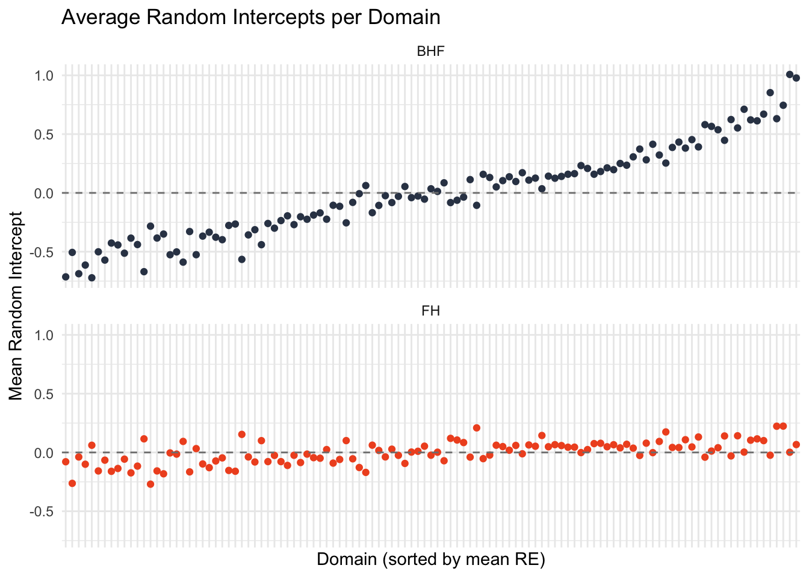
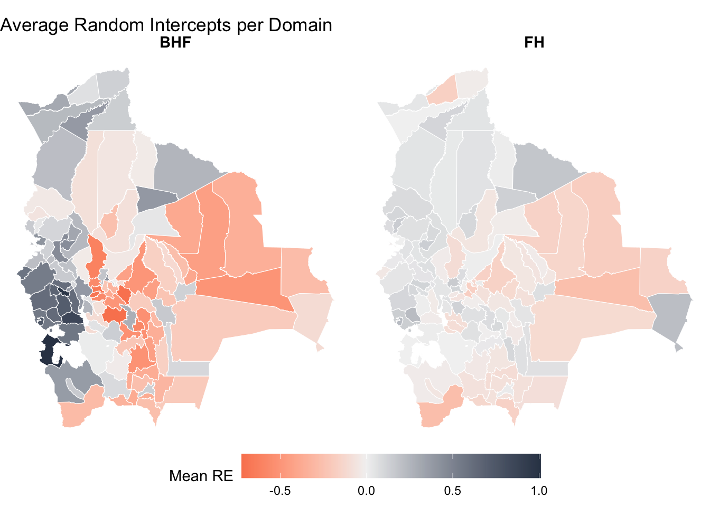
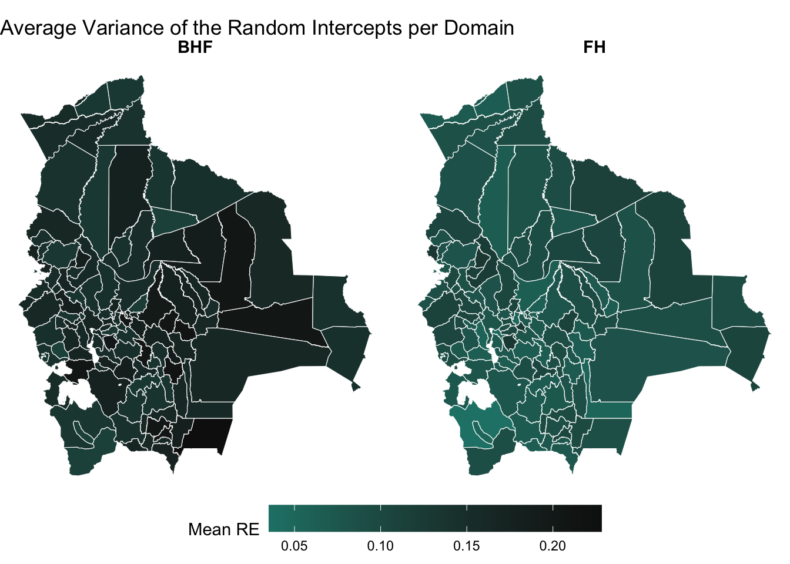
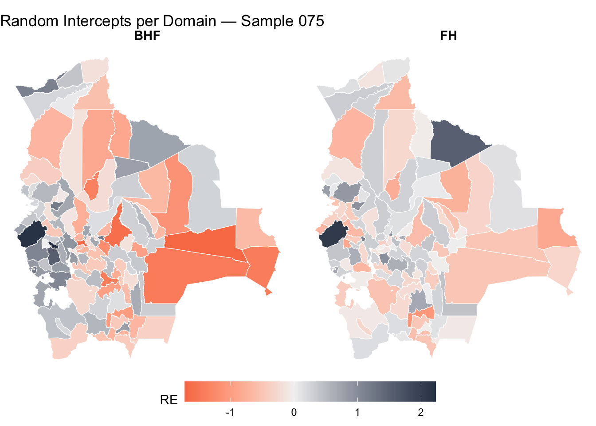

library(here)here() starts at /Users/lorenzoehler/Documents/GitHub/SAE_WS25knitr::opts_knit$set(root.dir = here::here())library(here)here() starts at /Users/lorenzoehler/Documents/GitHub/SAE_WS25knitr::opts_knit$set(root.dir = here::here())library(tidyverse)── Attaching core tidyverse packages ──────────────────────── tidyverse 2.0.0 ──
✔ dplyr 1.2.1 ✔ readr 2.2.0
✔ forcats 1.0.1 ✔ stringr 1.6.0
✔ ggplot2 4.0.3 ✔ tibble 3.3.1
✔ lubridate 1.9.5 ✔ tidyr 1.3.2
✔ purrr 1.2.2
── Conflicts ────────────────────────────────────────── tidyverse_conflicts() ──
✖ dplyr::filter() masks stats::filter()
✖ dplyr::lag() masks stats::lag()
ℹ Use the conflicted package (<http://conflicted.r-lib.org/>) to force all conflicts to become errorslibrary(nlme)
Attaching package: 'nlme'
The following object is masked from 'package:dplyr':
collapse# --- FH: extract random effects from all samples ---
fh_files <- list.files(
"data_raw/simulation/models/models_rds",
pattern = "_FH_full\\.rds$",
full.names = TRUE
)
fh_re_list <- list()
# i <- 1
for (i in seq_along(fh_files)) {
tmp_model <- readRDS(fh_files[i])
sample_id <- sub(".*sample_(\\d+)_FH_full\\.rds", "\\1", basename(fh_files[i]))
fh_re_list[[i]] <- data.frame(
sample = sample_id,
Domain = tmp_model$ind$Domain,
re = as.numeric(tmp_model$model$random_effects),
method = "FH"
)
}
# fh_re_list[[i]]$re
# fh_re_list[[i]]$Domain
df_fh_re <- bind_rows(fh_re_list)
# --- BHF: extract random effects from all samples ---
bhf_files <- list.files(
"data_raw/simulation/models/models_rds",
pattern = "_BHF\\.rds$",
full.names = TRUE
)
bhf_re_list <- list()
for (i in seq_along(bhf_files)) {
tmp_model <- readRDS(bhf_files[i])
sample_id <- sub(".*sample_(\\d+)_BHF\\.rds", "\\1", basename(bhf_files[i]))
re_df <- ranef(tmp_model$model)
bhf_re_list[[i]] <- data.frame(
sample = sample_id,
Domain = rownames(re_df),
re = re_df[["(Intercept)"]],
method = "BHF"
)
}
df_bhf_re <- bind_rows(bhf_re_list)
# --- Combine and average per domain ---
df_re_avg <- bind_rows(df_fh_re, df_bhf_re) |>
group_by(Domain, method) |>
summarise(mean_re = mean(re),
var_re = var(re),
.groups = "drop")
cat("FH samples loaded:", length(fh_files), "\n")FH samples loaded: 200 cat("BHF samples loaded:", length(bhf_files), "\n")BHF samples loaded: 200 head(df_re_avg)# A tibble: 6 × 4
Domain method mean_re var_re
<chr> <chr> <dbl> <dbl>
1 BO0101 BHF 0.281 0.205
2 BO0101 FH 0.0790 0.0668
3 BO0102 BHF -0.440 0.138
4 BO0102 FH 0.100 0.0805
5 BO0103 BHF -0.526 0.149
6 BO0103 FH 0.0328 0.0954ggplot(df_re_avg, aes(x = reorder(Domain, mean_re), y = mean_re, color = method)) +
geom_point(size = 1.5) +
geom_hline(yintercept = 0, linetype = "dashed", color = "grey50") +
facet_wrap(~ method, nrow = 2) +
scale_color_manual(values = c("#334155", "#F05425")) +
labs(
title = "Average Random Intercepts per Domain",
x = "Domain (sorted by mean RE)",
y = "Mean Random Intercept"
) +
theme_minimal() +
theme(
axis.text.x = element_blank(),
axis.ticks.x = element_blank(),
legend.position = "none"
)
library(sf)Linking to GEOS 3.13.0, GDAL 3.8.5, PROJ 9.5.1; sf_use_s2() is TRUEshp <- st_read("data_raw/shape/bol_adm_mdrt_2013/bol_admbnd_adm2_mdrt_2013_v01.shp", quiet = TRUE)
head(shp)Simple feature collection with 6 features and 6 fields
Geometry type: MULTIPOLYGON
Dimension: XY
Bounding box: xmin: -67.56218 ymin: -16.49165 xmax: -61.51574 ymax: -11.92781
Geodetic CRS: WGS 84
ADM0_ES ADM0_PCODE ADM1_ES ADM1_PCODE
1 Bolivia (Plurinational State of) BO Beni BO08
2 Bolivia (Plurinational State of) BO Beni BO08
3 Bolivia (Plurinational State of) BO Beni BO08
4 Bolivia (Plurinational State of) BO Beni BO08
5 Bolivia (Plurinational State of) BO Beni BO08
6 Bolivia (Plurinational State of) BO Beni BO08
ADM2_ES ADM2_PCODE geometry
1 Cercado BO0801 MULTIPOLYGON (((-65.08201 -...
2 General José Ballivían BO0803 MULTIPOLYGON (((-66.26249 -...
3 Itenez BO0808 MULTIPOLYGON (((-63.76698 -...
4 Mamore BO0807 MULTIPOLYGON (((-65.02658 -...
5 Marban BO0806 MULTIPOLYGON (((-63.97662 -...
6 Moxos BO0805 MULTIPOLYGON (((-65.04708 -...shp_re <- shp |>
left_join(df_re_avg, by = c("ADM2_PCODE" = "Domain"))
ggplot(shp_re) +
geom_sf(aes(fill = mean_re), color = "white", linewidth = 0.2) +
facet_wrap(~ method) +
scale_fill_gradient2(
low = "#F05425", mid = "grey95", high = "#334155",
midpoint = 0,
name = "Mean RE"
) +
labs(title = "Average Random Intercepts per Domain") +
theme_void() +
theme(
strip.text = element_text(size = 11, face = "bold"),
legend.position = "bottom",
legend.key.width = unit(1.5, "cm")
)
ggplot(shp_re) +
geom_sf(aes(fill = var_re), color = "white", linewidth = 0.2) +
facet_wrap(~ method) +
scale_fill_gradient2(
low = "#F5F500", mid = "#1B998B", high = "#111111",
midpoint = 0,
name = "Mean RE"
) +
labs(title = "Average Variance of the Random Intercepts per Domain") +
theme_void() +
theme(
strip.text = element_text(size = 11, face = "bold"),
legend.position = "bottom",
legend.key.width = unit(1.5, "cm")
)
# Change to inspect a different sample
sample_nr <- "075"
fh_single <- readRDS(paste0("data_raw/simulation/models/models_rds/sample_", sample_nr, "_FH_full.rds"))
bhf_single <- readRDS(paste0("data_raw/simulation/models/models_rds/sample_", sample_nr, "_BHF.rds"))
re_bhf_single <- ranef(bhf_single$model)
df_re_single <- bind_rows(
data.frame(
Domain = fh_single$ind$Domain,
re = as.numeric(fh_single$model$random_effects),
method = "FH"
),
data.frame(
Domain = rownames(re_bhf_single),
re = re_bhf_single[["(Intercept)"]],
method = "BHF"
)
)
shp |>
left_join(df_re_single, by = c("ADM2_PCODE" = "Domain")) |>
ggplot() +
geom_sf(aes(fill = re), color = "white", linewidth = 0.2) +
facet_wrap(~ method) +
scale_fill_gradient2(
low = "#F05425", mid = "grey95", high = "#334155",
midpoint = 0,
name = "RE"
) +
labs(title = paste("Random Intercepts per Domain — Sample", sample_nr)) +
theme_void() +
theme(
strip.text = element_text(size = 11, face = "bold"),
legend.position = "bottom",
legend.key.width = unit(1.5, "cm")
)